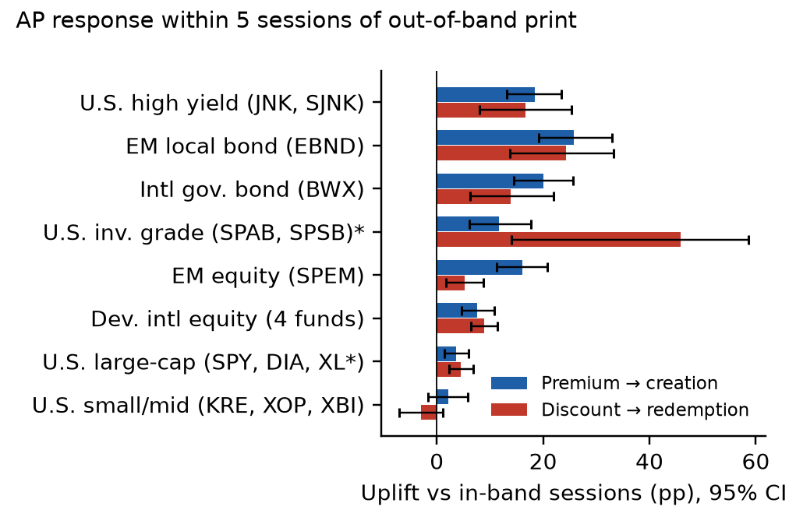
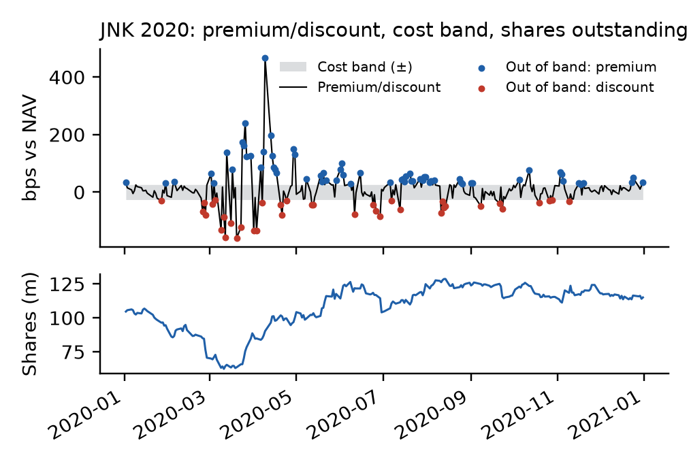
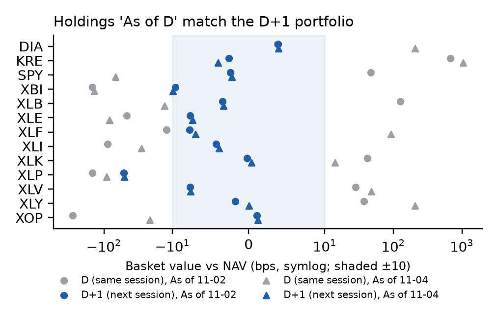
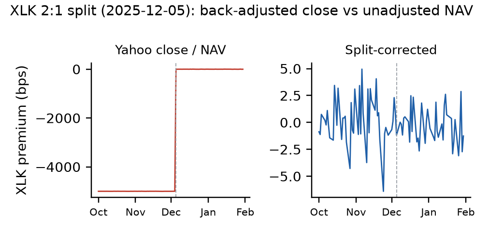

A daily monitor for 25 SPDR ETFs (U.S. equity, U.S. and international bond, international equity). It compares market price with official NAV and values the creation basket from issuer holdings. It models a cost-based arbitrage band and tests whether authorized participants (APs) create or redeem when the price leaves the band. Sample: Jan 2018 to Nov 2026, 55,575 fund-sessions.

Share of out-of-band sessions followed by net creation (premium) or redemption (discount) within 5 sessions, minus the in-band rate. Monthly block bootstrap. *Only 43 discount events.

JNK went to a deep discount in March 2020, and shares outstanding fell about 40% as APs redeemed. It then moved to a sustained premium, and creations rebuilt the fund.

Basket value (shares held × component close + cash) vs NAV. Holdings labelled "As of D" match the D+1 share count and NAV. The large same-session gaps are timing, not mispricing.

Yahoo back-adjusts closes for splits, but the issuer's NAV history does not. Without the correction, every pre-split session shows a fake −5,000 bps discount.
Code, tests and methodology: github.com/blitzer04/etf-arbitrage-monitor. Raw provider data (SSGA, Yahoo) is not redistributed. All figures are derived aggregates.